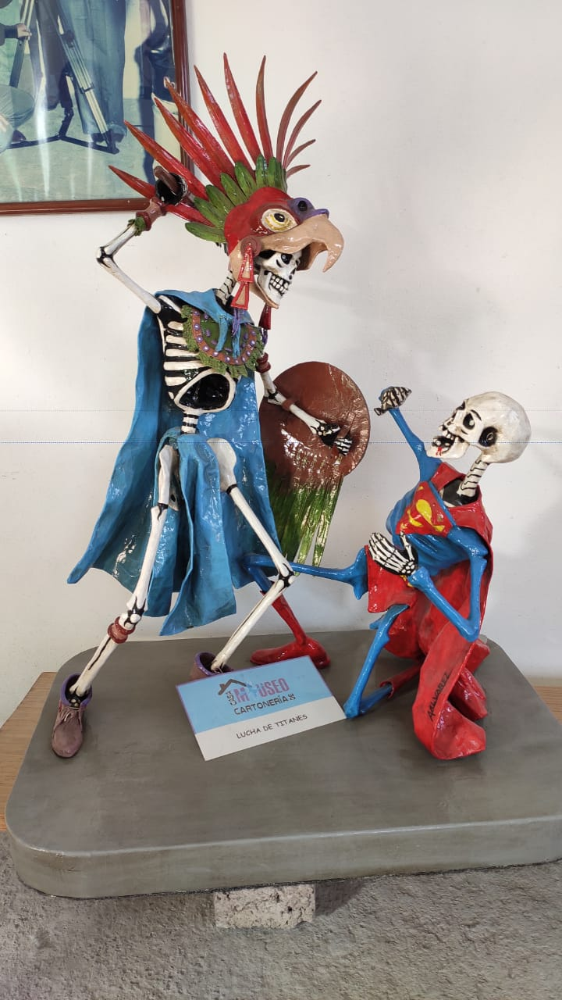
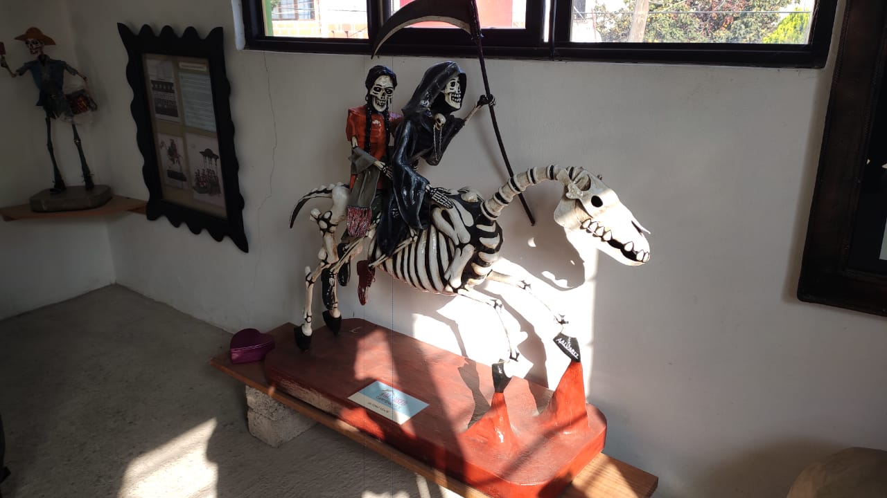
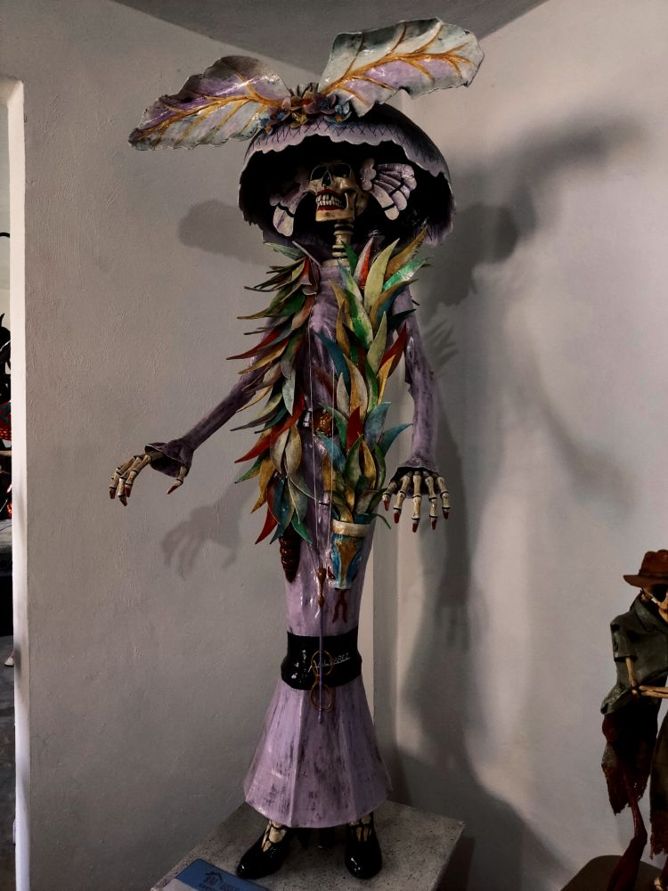
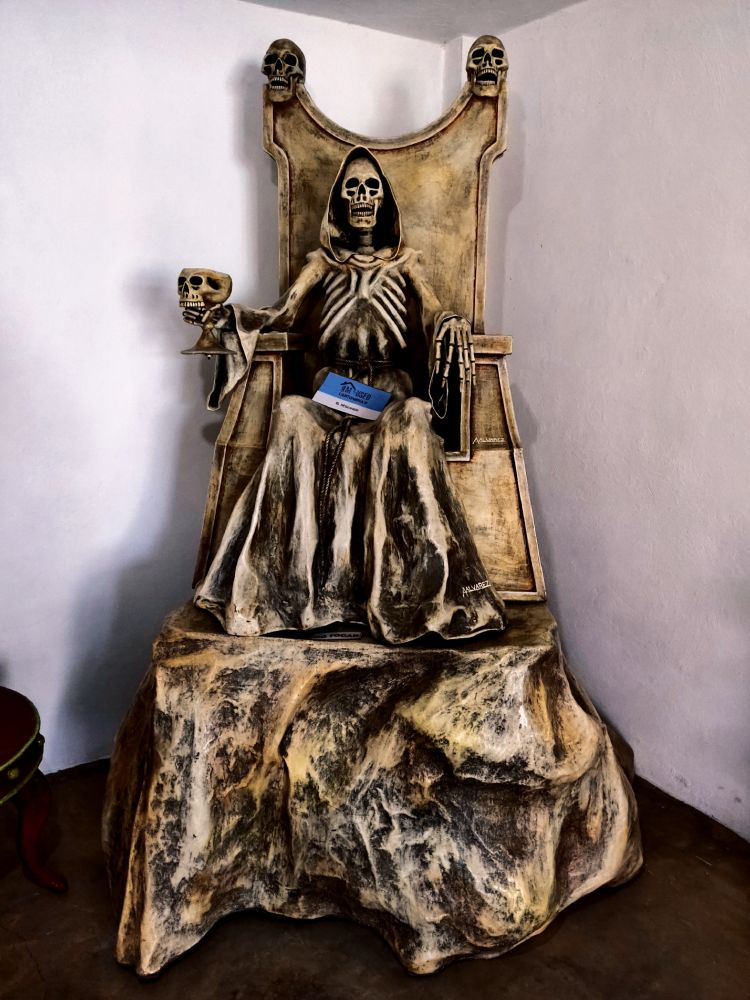
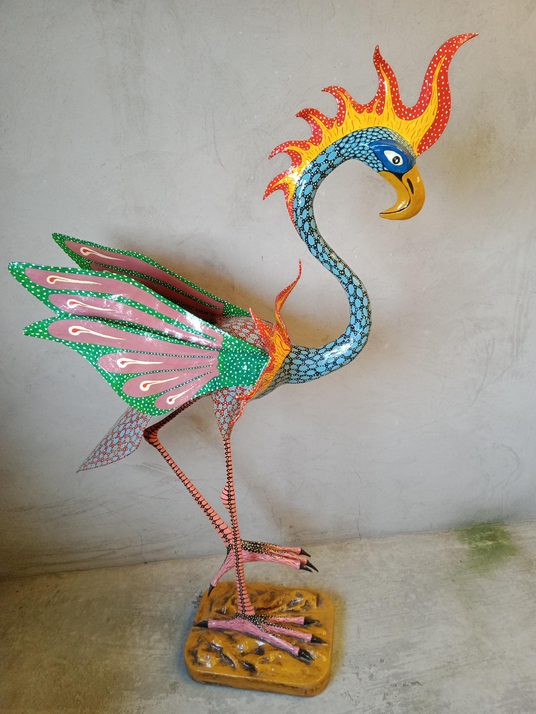
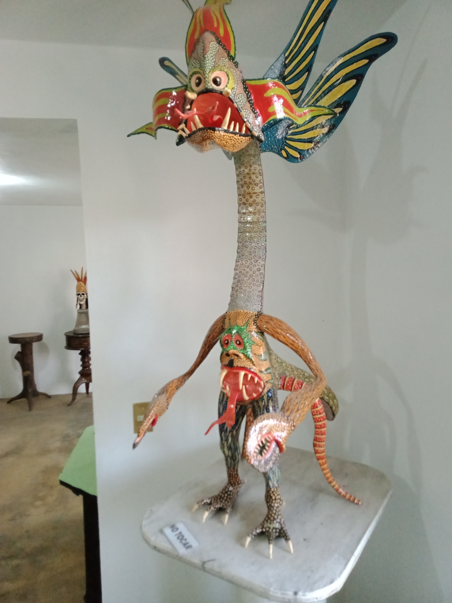
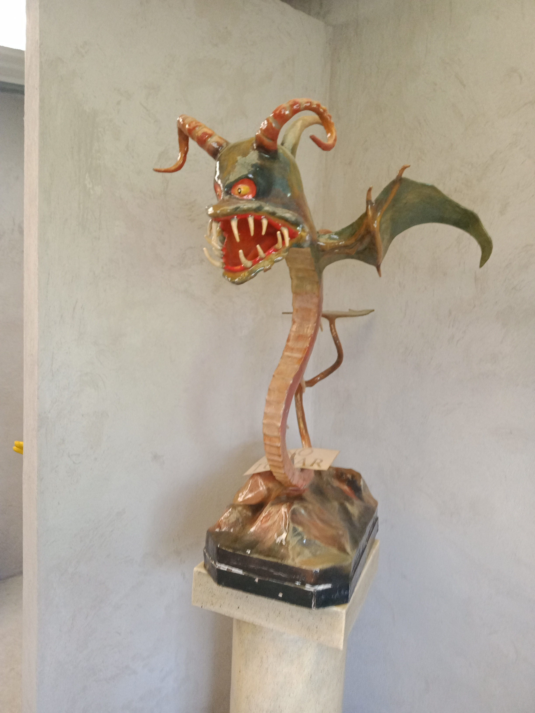
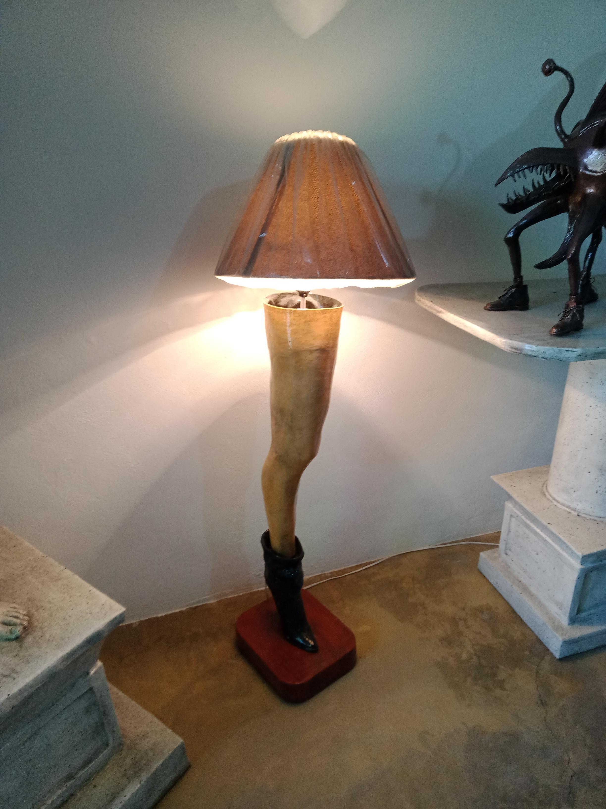
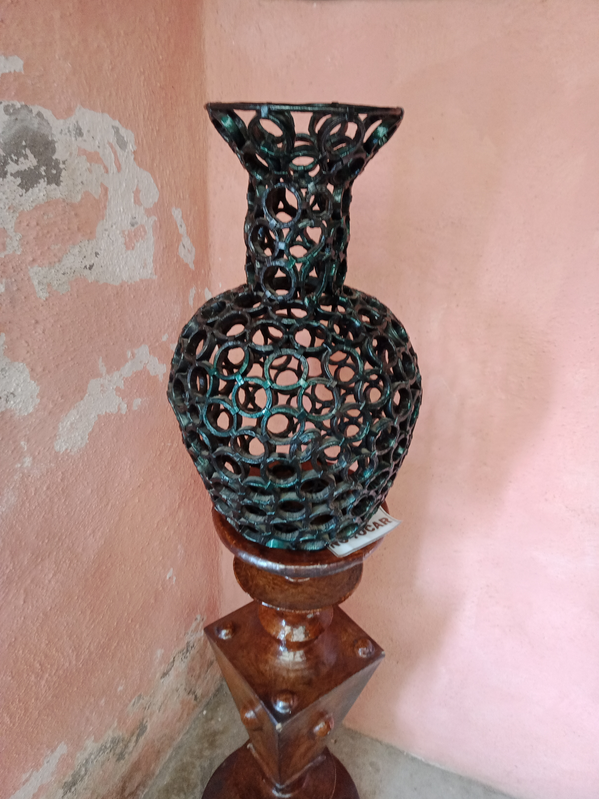
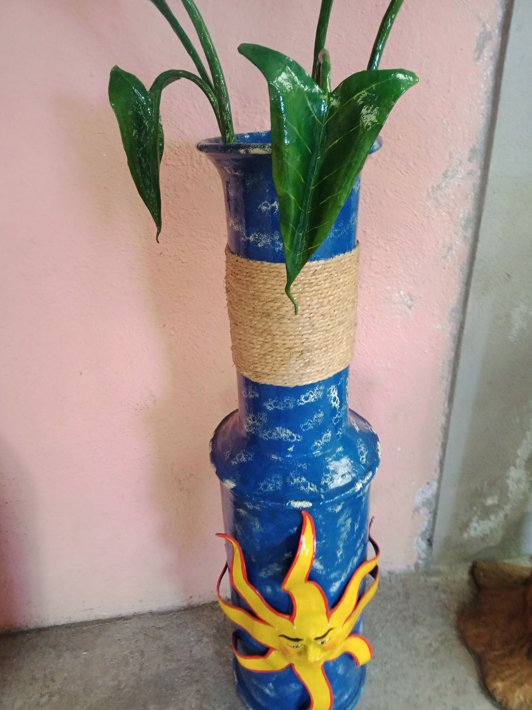

AUTOR DE LA EXPOCISION
Conoce a esta persona tan increible

LUCHA DE TITANES
Representa a nuestros gerreros astecas humillando a los herues estrangeros
ALBERTO ALVAREZ MARINEZ
Dueño de la expocision y el creador

EL ULTIMO VIEJE
Esta escultura representa al ultimo camino que tomaras antes de pasr a mejor vida
Haserca de Alberto Alvarez Marinez
Artista de la expocicion
Museo de la Cartonería En esta página se hablara sobre el museo llamado casa de la Cartonería con exposición privadas Respecto ala exposición cualquier escultura es echa completamente de cartón, el cartón es principalmente reciclado recuperado de basura Adalberto Álvarez Marines (Artista ) Es el creador de de esta exposición el cual nació su pacion por el arte de la Cartonería no la encontró después de probar distintas artes como son la escritura, la pintura, el tallado en madera, Álvarez nos expreso que no tuvo nada de gusto por la escuela de escho se considera como una persona no tan inteligente además que les tenía miedo a los maestros. Los inicios en su carrera de artista de Cartonería comenso con pequeñas esculturas que hacía en sus tiempos libres, después toco tomar una de las decisiones más importantes que a tomado en toda su vida la cuál marco su vida con su familia y su vida con la cartonería la cuál fue dejar su trabajo para seguir su pacion por el cual su mujer tocó solventar los gastos de casa , cómo fue avanzando con su carrera fue teniendo éxito nos comenta el artista que el no es bueno buscar el éxito con sus esculturas pero las esculturas es el que lo buscan como ventaja participo en muchos eventos como son unas expociciones en chalco y en otros paises. si quieres saber mas visita el museo y cuenta que esta pagina te ablo de el.
OBRAS DE ARTE
Hacemos de algo simple algo extraordinario
- Todos
- Alebrijes
- Esqueletos
- Muebles

Catrina fue creada para Dia de Muertos

Lucha de titanes

Es una representacion de la santa Muerte

Alebrije

Alebrije

Alebrije

Lampara de una Pierna

Florero echo con carton
